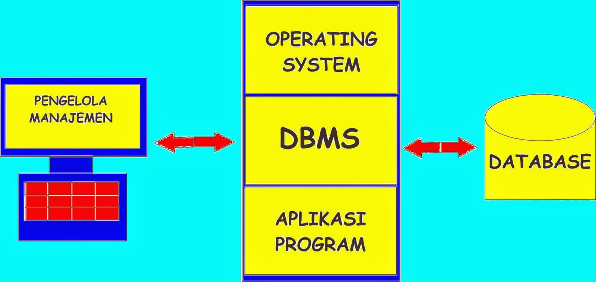
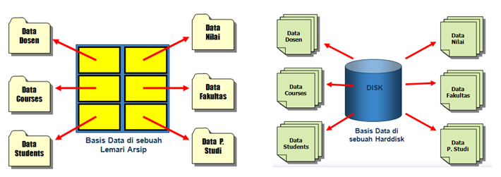
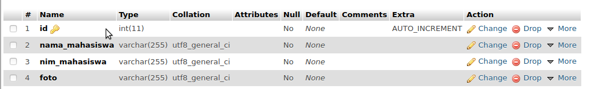
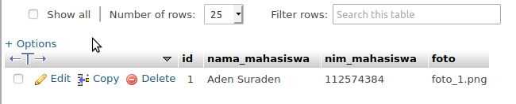
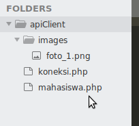
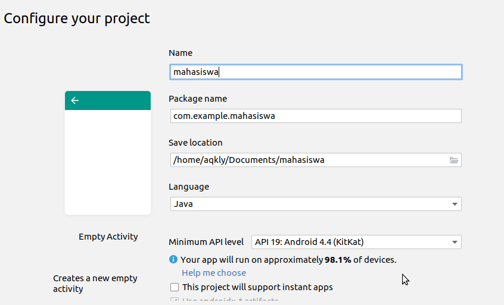
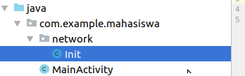

Basis data (Data Base) adalah suatu kumpulan data terhubung yang disimpan secara bersama-sama pada suatu media, yang diorganisasikan berdasarkan sebuah skema atau struktur tertentu, dan dengan software untuk melakukan manipulasi untuk kegunaan tertentu.
Dari pengertian tersebut dapat disimpulkan bahwa basis data (database) mempunyai beberapa kriteria penting, yaitu :
Bersifat data oriented dan bukan program oriented
Dapat digunakan oleh beberapa program aplikasi tanpa perlu mengubah basis datanya.
Dapat berkembang dengan mudah, baik volume maupun strukturnya.
Dapat memenuhi kebutuhan sistem-sistem baru secara mudah.
Dapat digunakan dengan cara-cara yang berbeda.
Pemanfaatan basis data :
Sebagai salah satu komponen penting dalam sistem informasi, karena merupakan dasar dalam menyediakan informasi.
Menentukan kualitas informasi : akurat, tepat waktu dan relevan.
Mengurangi duplikasi data (data redundancy)
Hubungan data dapat ditingkatkan.
Manipulasi terhadap data dengan cepat dan mudah.
Efisiensi penggunaan ruang penyimpanan.
Database Management System (DBMS)
Database Management System (DBMS) merupakan sebuah perangkat lunak yang berhubungan dengan pengguna, aplikasi lainnya, dan basis data secara langsung untuk mengambil, menyimpan, dan menganalisa data yang ada.


Penyimpanan data dalam bentuk DBMS mempunyai banyak manfaat dan kelebihan dibandingkan dengan penyimpanan dalam bentuk flat file atau spreadsheet, diantaranya :
Performa yang dapat dengan penyimpanan dalam bentuk DBMS cukup besar.
Integritas data lebih terjamin dengan penggunaan DBMS.
Independensi.
Sentralisasi.
Keamanan.
Keunggulan DBMS antara lain sbb:
Mengurangi duplikasi data atau data redundancy.
Menjaga konsistensi dan integritas data.
Meningkatkan keamanan data.
Meningkatkan effisiensi dan effektivitas penggunaan data.
Meningkatkan produktivitas para pengguna data.
Memudahkan pengguna dalam menggali informasi dari kumpulan data.
Meningkatkan pemeliharaan data melalui independensi data.
Meningkatkan pemakaian bersama dari data.
Meningkatkan layanan backup dan recovery data.
Mengurangi konflik antar pengguna data.
Komponen Sistem Basis Data (Database)
Perangkat Keras ( Hardware )
Perangkat keras yang biasanya terdapat dalam sistem basis data adalah memori sekunder hardisk.
Sistem Operasi ( Operating System )
Sistem Operasi (Operating System) merupakan program yang mengaktifkan atau mengfungsikan sistem komputer, mengendalikan seluruh sumber daya (resource) dan melakukan operasi-operasi dalam komputer. Sistem Operasi yang banyak digunakan seperti: MS-DOS, MS-Windows 95 MS Windows NT, dan Unix.
Basis data ( Database )
Sebuah basis data (Database) dapat memiliki beberapa basis data. Setiap basis data dapat berisi atau memiliki sejumlah objek basis data seperi file atau tabel. Database Management System (DBMS).
Pemakai ( User )
Bagi pemakai dapat berinteraksi dengan basis data dan memanipulasi data dalam program yang ditulis dalam bahasa pemograman.
Perangkat Lunak Database (Basis data)
Perangkat lunak database ( basis data ) yang banyak digunakan dalam pemrograman
MySQL
Microsoft SQL Server
Relational Database Management System ( RDBMS )
Clipper
DBASE
Firebird
Tahapan Perancangan Database
Perencanaan database ( basis data )
Mendefiniskan system
Analisa dan mengumpulkan kebutuhan
Perancangan database ( basis data )
Perancangan aplikasi
Membuat prototype
Implementasi
Konversi data
Pengujian
Pemeliharaan operasional
Menghubungkan Database Dalam Aplikasi Mobile
Tutorial : cara menghubungkan database MySQL dengan android studio
Banyak cara yang dapat dilakukan untuk menghubungkan aplikasi client (android) dengan sebuah server seperti: MySQL, firebase, mongoDB, postgreSQL dll. Disini kita akan bahas cara untuk menghubungkan aplikasi client (android) dengan database MySQL.
Untuk langkah pertama mari kita siapkan dulu database nya, buat database dengan nama tutorial_1 dan table dengan nama mahasiswa. Dengan field-field sebagai berikut:

Setelah selesai dibuat, insert database dengan data sebagai berikut:

Selanjutnya kita masuk ke directori xampp, kalo di windows biasanya ada di C:/Program Files/XAMPP/htdocs. Untuk pengguna OS lain silahkan menyesuaikan. Lalu kita buat sebuah folder dengan nama apiClient.
Jika sudah, kita buat sebuah file di dalam folder /apiClient dengan nama koneksi.php. lalu isi file tersebut dengan kode dibawah ini:
Selanjutnya kita buat satu file lagi di dalam folder /apiClient dengan nama mahasiswa.php. dan isikan kode dibawah ini:
<?php
// include file koneksi
require 'koneksi.php';
// buat qUery perintah untuk menampilkan semua data
// Secara Descending berdasarkan ID
$sql = "SELECT * FROM mahasiswa ORDER BY id DESC";
$query = $conn->query($sql);
// Variable penampung array sementara
$response_data = null;
while ($data = $query->fetch_assoc()) {
// tambahkan data yg di seleksi ke dalam array
$response_data[] = $data;
}
// Cek apakah datanya null ?
if (is_null($response_data)) {
// jika ya, buat status untuk response jadi false
$status = false;
} else {
// jika tidak, buat status untuk response jadi true
$status = true;
}
// Set type header response ke Json
header('Content-Type: application/json');
// Bungkus data dalam array
$response = ['status' => $status, 'mahasiswa' => $response_data];
// tampilkan dan convert ke format json
echo json_encode($response);
?>
Selanjutnya kita buat folder images di dalam folder /apiClient lalu masukan foto dengan nama sesuai dengan data didatabase. Sehingga seluruh isi folder menjadi seperti:

Selanjutnya kita masuk ke project android nya, pertama buka android studio lalu pilih new project, pilih empty activity lalu muncul seperti gambar dibawah ini, scroll kebawah lalu klik finish.

Next buka file build.gradle (module app) dan tambahkan :
Next, buat package baru di folder project java dengan nama network, lalu buat file java dengan nama Init.java sehingga menjadi seperti:

Isi file Init.java dengan kode:
package com.example.mahasiswa.network;
import retrofit2.Retrofit;
import retrofit2.converter.gson.GsonConverterFactory;
public class Init {
// URL Server API
public static String API_URL = "http://192.168.20.157/apiClient/"; //samakan api address dengan komputer anda
public static Retrofit setInit() {
return new Retrofit.Builder().baseUrl(API_URL)
.addConverterFactory(GsonConverterFactory.create())
.build();
}
public static ApiServices getInstance() {
return setInit().create(ApiServices.class);
}
}
Next, buat file interface didalam package network dengan nama ApiServices dan isikan kode: